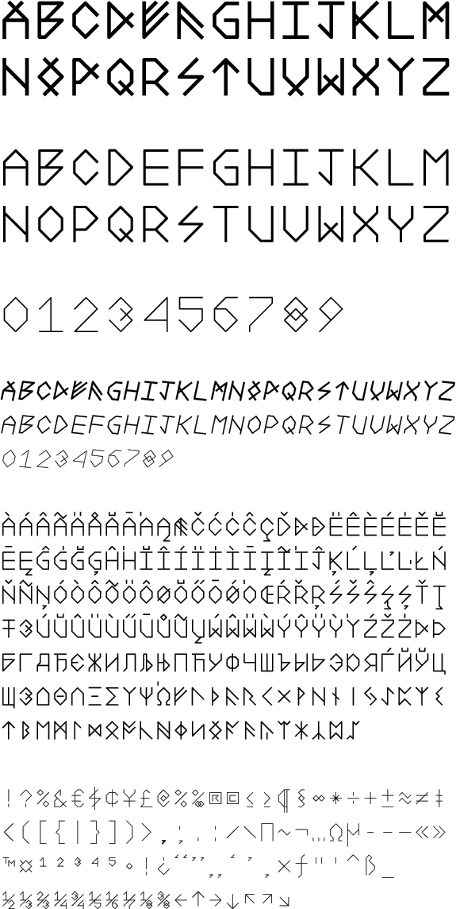

Times New Rope
Tekkno
Grindavik
Typeface
Grindavík is a monospaced font family and comes in three weights with italics. The typeface is inspired by Wim Crouwel’s type design, Fuþark runes and older cumae forms.
Grindavik includes amazing amount of characters — you can write in german, spanish, russian, greek, french, polish, czech, turkish, to name a few.
This is how it was displayed on my graduation exhibition.

I made a super-rust-mixture which I sprayed on the letters. Each letter is water-cut in 10mm iron


Here I'm are making Grindavik Pizza Bold.

The quick brown fox ju...

My friend Bjöggi brushing the letters with pizza-sauce.

Sprinkled cheese and a little bit of cayenne-pepper.

Baked and ready to munch.